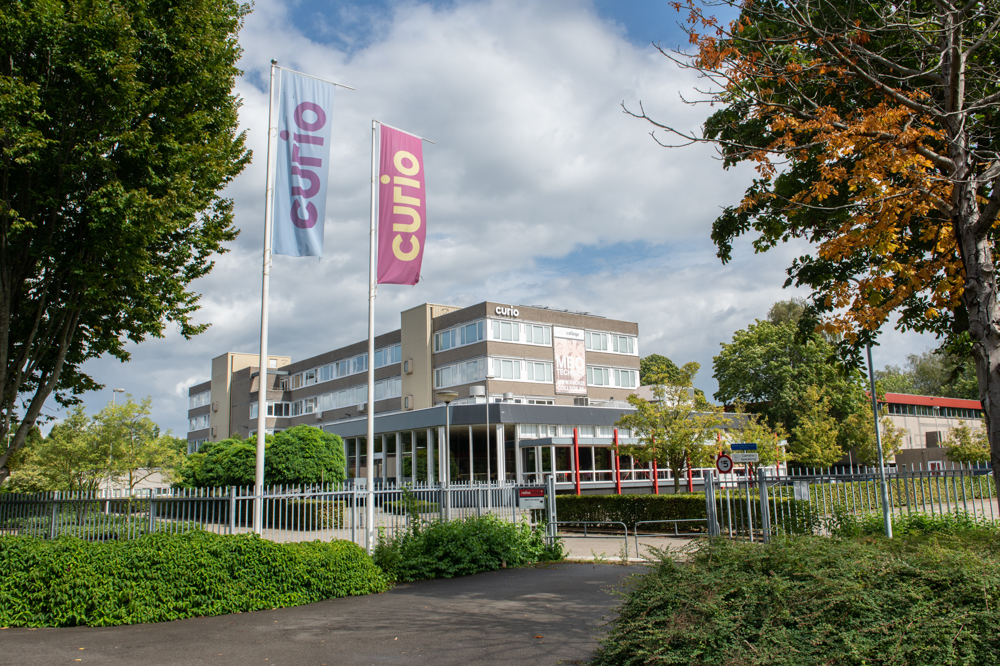

Onze Locatie
Adres
Terhijdenseweg 350
4826 AA Breda
Nederland
Bereikbaarheid
Met de auto: gemakkelijk bereikbaar vanaf de A16 of N285. Parkeren kan op het schoolterrein of in de buurt.
Met het openbaar vervoer: diverse buslijnen stoppen dichtbij. Het treinstation Breda is op ongeveer 10 minuten fietsen afstand.
Met de fiets: er zijn voldoende fietspaden en fietsenstallingen bij de school.
